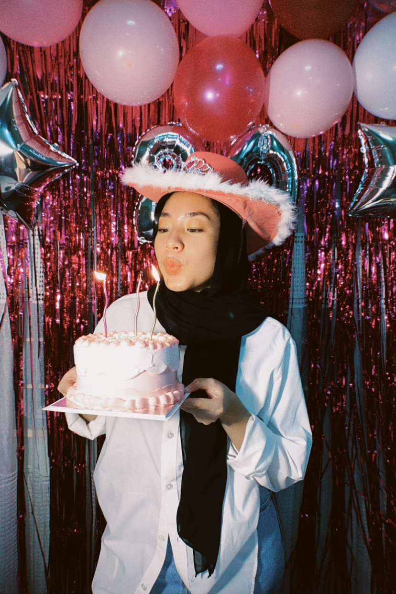
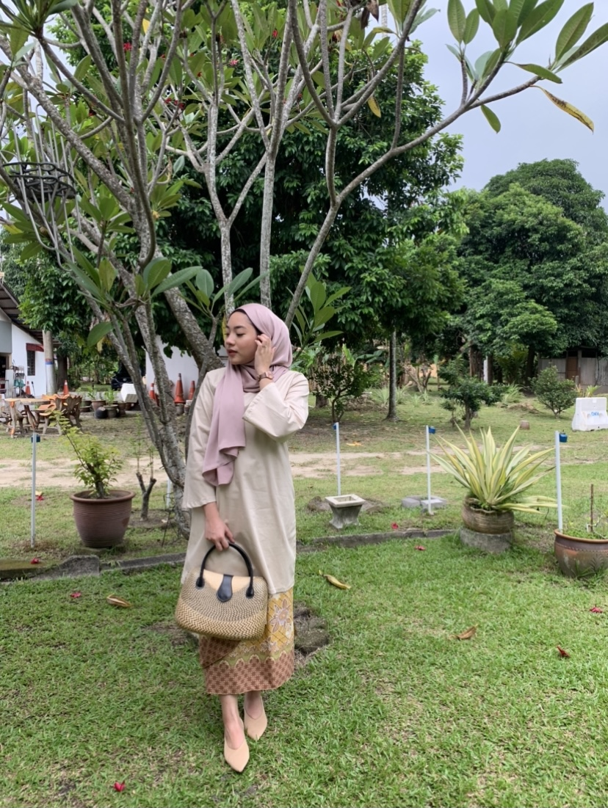

Me, Myself & I


My Friends

My Family


IMAGE GALLERY
Here I will display images of myself and those who are really important to me...
I love taking pictures because I get to capture every beatiful and precious moments.
Photos also tilt memories toward the good experiences I've had, simply because I'm
more likely to take photos of joyful times. There's a story behind every image. If
I'm looking at photos I've taken of my families or friends I'll be reminded of that
specific moment and behind that images there is a story.
Me, Myself & I
My Friends
My Family